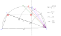

average
operation

Source: Wikipedia
Wikipedia Page (Something wrong with this association? Let us know.)
Wikidata Page (Something wrong with this association? Let us know.)
Occurs in:
- earth_sun__average_of_distance
- earth_equator__average_of_temperature
- earth_surface__average_of_temperature
- model_grid_node__average_of_distance
- atmosphere_bottom_air__average_of_temperature
- ammonia-as-nitrogen_volatilization__average_of_mass_rate
- ammonium-as-nitrogen_leaching__average_of_mass_rate
- nitrate-as-nitrogen_leaching__average_of_mass_rate
- nitrogen_mineralization__average_of_gross_mass_rate
- nitrogen_immobilization__average_of_gross_mass_rate
- nitrogen_mineralization__average_of_net_mass_rate
- soil_as-nitrogen_denitrification__average_of_mass_rate
- soil_as-nitrogen_nitrification__average_of_mass_rate
- soil_as-nitrogen_denitrification_nitrous-oxide-as-nitrogen_emission__average_of_mass_rate
- soil_as-nitrogen_nitrification_nitrous-oxide-as-nitrogen_emission__average_of_mass_rate
- soil_nitrous-oxide-as-nitrogen_emission__average_of_mass_rate
- land_surface__average_of_skin_temperature